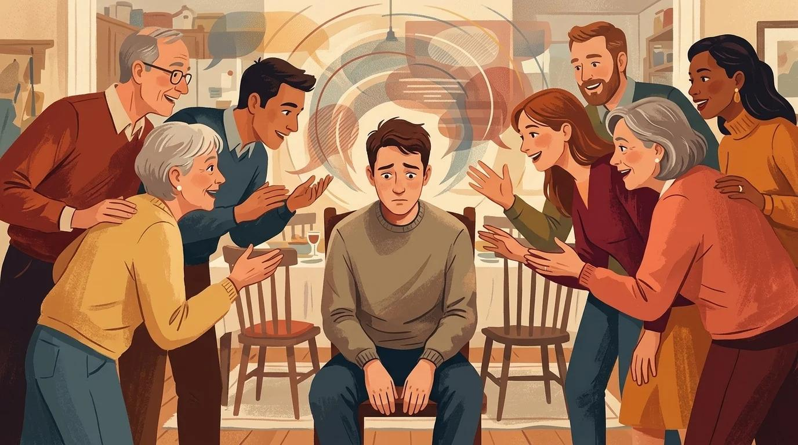

Stop Telling Us to “Just Put Ourselves Out There”
Why Pressuring Young Single Adults to Date Backfires—and What Loved Ones Should Do Instead

If you are a young single adult—especially in a community that deeply values marriage and family—you know the script by heart. You walk into a family gathering, a holiday dinner, or a reunion with friends, and before you’ve even grabbed a plate of food, someone leans in with a grin: “So, you dating anyone?” When you laugh it off and say no, the teasing starts, quickly followed by the universal prescription: “You just need to put yourself out there!”
I know this script because I lived it for years after returning home from my church volunteer service, and I still watch my close friend Ranse live it today. When our friends or family bring up dating, Ranse instantly retreats into an awkward silence or deflects with self-deprecating jokes.
Don’t get me wrong, though. When parents, siblings, and friends nudge us to date, they aren’t trying to be cruel or give us a hard time. They ask because they love us. They want us to be happy, and in their minds, dating is like riding a bike—the more you push someone to get on, the faster they’ll figure it out.
The problem is that for a young adult who hasn’t built secure self-confidence yet, that push makes dating harder. Before nudging an insecure young adult to date, loved ones need to focus on building up their self-esteem. Pushing someone to date before they feel worthy of love only leaves them feeling more desperate and self-conscious.
The Root Issue
To understand why outside pressure hurts so much, you must understand what is already happening inside the head of an insecure young adult. For the first couple of years I was home, every single date felt like a performance review. Throughout my dates, a loop played nonstop in my mind: I’m not good enough for her. I’m boring. There’s something fundamentally flawed about me, and my job tonight is to hide it.
Psychologists have a name for this mindset: the imposter syndrome. We usually associate imposter syndrome with the workplace or school, where people feel like they’re not as good as peers around them. However, researcher Chanté Alvarado found that this same dynamic bleeds heavily into intimate relationships, strongly correlating with lower self-esteem and insecure attachment styles. When young adults feel like imposters in romance, they put potential partners on a pedestal while viewing themselves negatively, constantly fearing they will be “caught” and abandoned.
My friend Ranse is like this. Before he even speaks to a girl at a gathering, he has already decided why she would never be interested in him. He counts himself out of the game before he even puts on his uniform.
Pushing someone in this headspace to go on more dates tends to trigger what psychologists Geraldine Downey and Scott Feldman call rejection sensitivity—a pattern where someone anxiously expects rejection, scans every interaction for signs of failure, and reacts defensively. That nervous, ‘self-protecting’ energy ends up pushing potential partners away, creating the exact rejection they were terrified of in the first place. Telling someone with rejection sensitivity to just go on more dates is like telling someone with a broken leg to walk it off; the more they force it, the worse the injury gets.
Feeding the Negative Cycle
Even when family and friends think they are just offering lighthearted encouragement, constant questions about a young adult’s relationship status can instead send a quiet, heavy message: “You are behind, and you are disappointing us.” As researchers Samantha Spielmann and her colleagues explain, Western society already pushes the idea that a romantic relationship is the single most important relationship a person can have. When loved ones reinforce that cultural timeline at gatherings, it cranks up what psychologists call the fear of being single—a deep anxiety and distress about being without a partner.
Here is where the advice to “put yourself out there” truly backfires. Research by Menelaos Apostolou, Burcu Tekeş, and Antonios Kagialis shows that lower self-esteem directly increases the fear of singlehood, which in turn drives involuntarily single people to exert frantic, anxious “mating effort” or what we call “acting desperate”. At that point, they are dating out of pure desperation.
And panic makes people look and act different. Spielmann et al. found that a high fear of being single leads people to prioritize relationship status over relationship quality. In their studies, daters with high fear of being single were significantly more willing to settle for unresponsive, uncaring partners simply because they felt that any relationship was better than being alone. I know that feeling firsthand. When my self-worth was at rock bottom, I ignored red flags and tried to mold my personality to fit whoever was sitting across from me just to prove I was lovable. When those forced, mismatched relationships inevitably fall apart, the young adult walks away with their already fragile self-esteem bruised even worse than before.
How Loved Ones Could Actually Help
If we step back for a moment, I think we can all agree on one simple truth: loved ones care about each other. Parents, siblings, and friends have an ethical responsibility to genuinely be there for the young adults in their lives. And being there means prioritizing their long-term mental well-being over an arbitrary cultural timeline for marriage.
The stakes here are much bigger than whether someone has a date this Friday night. In a 2024 study on emerging adults, researcher Shuwen Li found that lower self-esteem directly predicts higher levels of loneliness, and notably, simply having a significant other does not automatically fix low self-esteem or cure that loneliness. Even more sobering, a 2026 longitudinal study by Katherine Keyes and her colleagues tracked Americans from age 18 to age 60 and found that most of the cumulative risk for low self-esteem and chronic loneliness builds up in young adulthood. Those who struggled with low self-esteem at age 18 had nearly seven times the odds of experiencing high depressive symptoms at age 60.
If we truly want the young single adults we love to build healthy, lasting marriages one day, we have to stop treating a relationship status as the cure for insecurity. Interestingly, Downey and Feldman note that supportive social relationships play a powerful role in helping people break out of the cycle of rejection sensitivity. In other words, simply being a steady, supportive presence does far more good than playing cupid ever could.
Changing the Question
My own breakthrough in dating didn’t happen because someone finally convinced me to go on more dates. It happened the day I stopped treating myself like a broken project and realized, “You know what? I am kind, I work hard, and I am good enough… even if someone doesn’t see it.” The moment my self-esteem shifted, the panic vanished, and dating became fun.
Loved ones play a huge role in creating the kind of environment where that mind shift can happen. Next time you see a single friend, son, daughter, or sibling, show some genuine interest in what they’ve been up to lately and remind them of what you appreciate about them.
| Instead of saying… | Try saying… |
|---|---|
| “Why are you still single? You’re such a catch!” | “What’s something you’ve been really enjoying or proud of lately?” |
| “You just need to put yourself out there more.” | “I just really admire […] about you.” |
| “Did you meet anyone at church/school this week?” | “I’m always glad to see you. How’s life treating ya?” |
When you stop making us feel like an unfinished checklist item and start reminding us that we are already whole, valuable people, you take away the fear that makes us sabotage ourselves. Stop pressuring us to find someone to love us and start helping us believe we are worth loving in the first place.